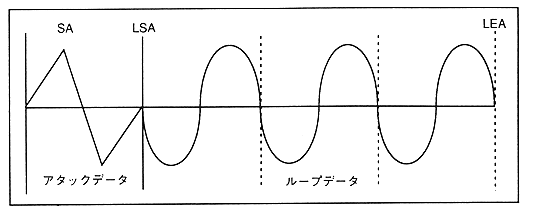
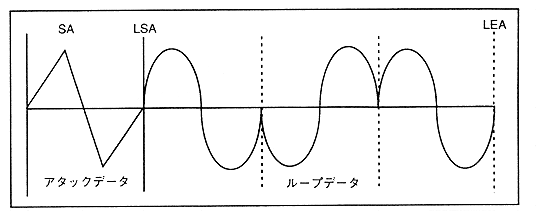

Figure 4.27: Alternative loop

Since the normal loop and reverse loop are based on the assumption that the data corresponding to "LSA" and "LEA" is the same, copy the data of "LSA" to "LEA" and create the loop data. The setting value of the alternative loop must be set so that "LSA" <"LEA" (The operation when "LSA"> "LEA" is not guaranteed in all loops). In addition, by placing duplicate data at the loop start point and loop end point, the pitch of the alternative loop can be matched with the pitch of other loop modes. When the loop mode of all waveforms is limited to the alternative loop, the data corresponding to "LSA" and "LEA" do not need to be the same value.